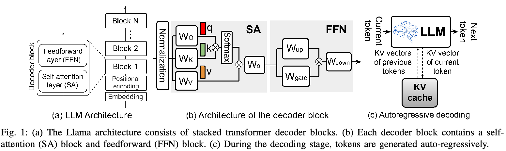
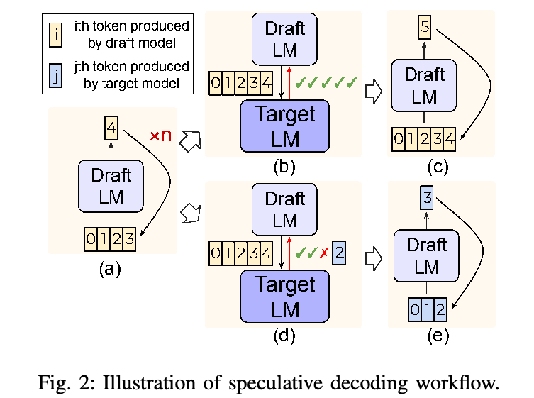
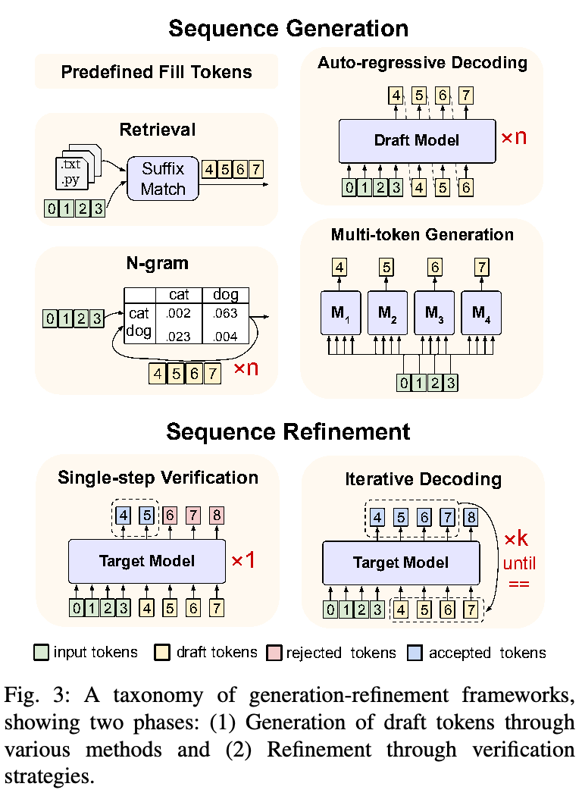
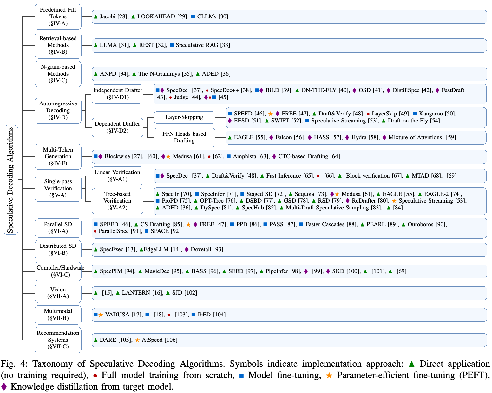
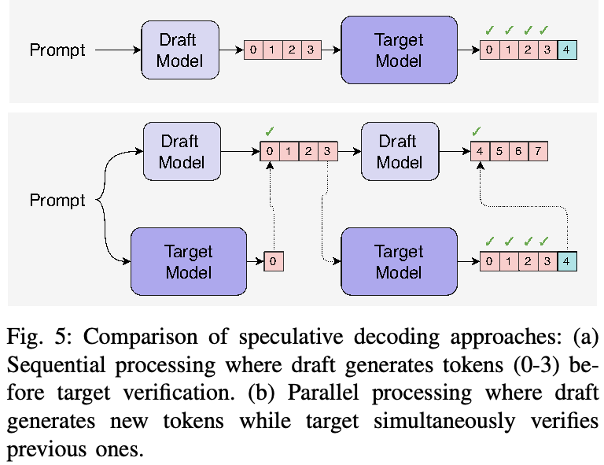
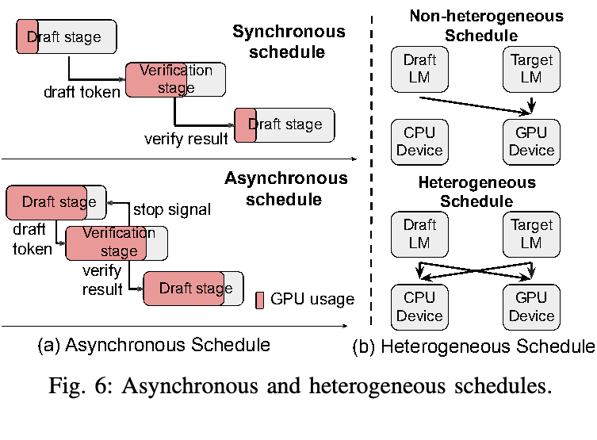
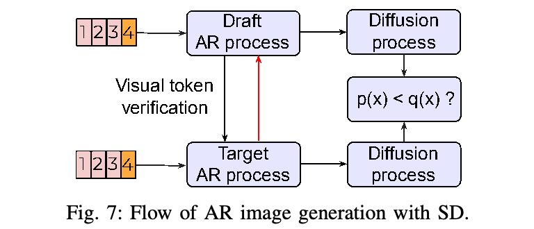

Speculative Decoding 及其拓展：技术深度综述
Yunhai Hu1*、Zining Liu2*、Zhenyuan Dong1*、Tianfan Peng1,3*、Bradley McDanel4、Sai Qian Zhang1†
1纽约大学；2宾夕法尼亚大学；3深圳信息职业技术学院；4Franklin and Marshall College
{yunhai.hu, zd2362, sai.zhang}@nyu.edu；zliu0@seas.upenn.edu；tianfanpeng@gmail.com；bmcdanel@fandm.edu
摘要
顺序依赖是部署大型自回归模型的一项根本瓶颈，对实时应用尤为如此。传统的剪枝、量化等优化方式往往损害模型质量，而生成—细化框架的最新进展表明，这种权衡可以显著缓解。
本综述为生成—细化框架提供全面分类，分析自回归序列任务中的各种方法。我们依据生成策略（从简单 n-gram 预测到复杂草稿模型）和细化机制（包括单次验证和迭代方法）划分方法。通过系统分析算法创新和系统层面实现，我们研究不同计算环境下的部署策略，并探索文本、图像和语音生成等应用。对理论框架与实际实现的这一系统考察，为未来高效自回归 decoding 研究奠定基础。
索引词：大语言模型、Speculative Decoding、计算机系统、分布式系统。
I. 引言
大型模型（LM）在诸多领域展现了卓越能力，从文本生成 [1], [2], [3]、翻译 [4], [5], [6]，到图像合成 [7], [8], [9] 和视频生成 [10], [11], [12]。然而，这些模型面临一个关键挑战：其固有的顺序性质造成显著延迟瓶颈，对实时应用尤其如此。量化和剪枝等传统优化通常以模型质量换取速度，而近期研究聚焦于通过新颖的算法及系统创新，打破顺序依赖，同时保持输出质量。
生成—细化框架已经成为一类有前景的解决方案，直接针对这些顺序瓶颈。它们涵盖从使用草稿模型的 speculative decoding，到受数值优化启发的迭代细化等多种方法。共同点在于将生成过程分为两个阶段：首先进行初始生成，并行产生草稿 token；随后通过细化步骤确保输出质量。
在不同部署场景，实现这些框架会带来独特的系统挑战。边缘设备需要细致优化内存使用与计算模式 [13], [14]；分布式系统则必须管理复杂通信模式及负载均衡。这些系统考量推动了内核设计、硬件加速及 batch 处理优化等创新，显著影响算法选择和实际性能。
本综述综合这些方法的研究，同时考察算法创新及其系统实现。我们提出生成—细化方法的系统分类，分析不同计算环境的部署策略，并探索文本、图像 [15], [16] 和语音 [17], [18] 应用。主要贡献包括全面分析系统实现与优化，详细考察跨模态应用，并识别高效神经序列生成中的关键研究挑战。
II. 大型模型推理的顺序瓶颈
A. 理解顺序依赖
Llama 系列 [19], [20], [21] 和 GPT 系列 [22], [1] 等现代 LLM，采用由堆叠 decoder 块构成的 transformer 架构。如图 1(a) 所示，每个 decoder 块包含两个基本组件：self-attention（SA）块和前馈网络（FFN）。执行时，SA 块输入先与 \(W_Q,W_K,W_V\) 三个权重矩阵相乘，分别得到 query（\(q\)）、key（\(k\)）、value（\(v\)）输出。图 1(b) 详细展示计算流：query 与 key 向量通过矩阵乘法计算 attention 分数。经 softmax 归一化后，这些分数对 value 向量加权，通过加权求和及残差连接产生 SA 输出。随后 SA 输出送入 FFN，后者通常实现为标准 MLP [23], [22] 或 gated MLP [24], [19], [20]，包含多个全连接层，以及 GeLU [25] 或 SiLU [26] 等激活函数。
核心挑战出现在推理阶段。推理包括 prefill 和 decoding 两个主要阶段。虽然 prefill 阶段（接下页）。
*同等贡献。†通信作者。


（接上页）能够并行处理输入序列，但 decoding 阶段引入了关键瓶颈。如图 1(c) 所示，模型必须顺序预测每个 token，通过当前与先前 token 的 Key 和 Value（KV）向量利用相应信息。这些 KV 向量被缓存以供后续预测；随着序列增长，导致显著的内存访问延迟。
B. 打破顺序依赖
传统 LM 推理加速方法主要通过模型压缩、知识蒸馏及架构优化降低计算成本。然而，它们主要处理单次计算成本，而非每个 token 都必须等待全部先前 token 的根本顺序依赖。
Speculative decoding（SD）[27] 是一种有前景的方案，直接针对这一顺序瓶颈。如图 2 所示，它引入两阶段过程：较小、较快的草稿模型先并行预测多个 token，再使用目标模型验证。草稿模型支持并行 token 生成，突破传统逐 token 生成；目标模型的验证步骤则通过接受／拒绝决策保持输出质量。
这一策略对交互对话系统等实时应用尤其有价值，因为响应延迟直接影响用户体验。验证机制在生成速度与输出质量间提供关键平衡：通过接受正确预测维持吞吐量，必要时退回顺序生成以保持准确性。
虽然 SD 是打破自回归（AR）模型顺序依赖的一种成功途径，但它属于更广泛的生成—细化方法。后续章节系统分类这些方法，考察不同技术如何平衡生成并行性与输出质量。
III. 生成与细化框架的分类
为系统分析打破大模型顺序依赖的方案，我们提出统一分类法，依据生成与细化策略划分方法。如图 3 所示，该分类将框架分为两个基本阶段：序列生成和序列细化。这种分解不仅涵盖传统 SD，也包含更广泛的新兴方法，它们在生成并行性与输出质量之间权衡。
序列生成阶段关注如何比单个大模型的常规自回归 decoding 更高效地产生草稿 token。策略涵盖简单的随机 token 采样（结合迭代 decoding 使用），以及更复杂的基于检索的生成和草稿模型预测。每种生成方法在计算成本与预测质量方面都有取舍。
序列细化阶段决定如何处理这些候选：可以直接接受，但质量可能较差；可以单次验证一个 token 子集；也可以通过多轮迭代细化草稿 token，直至收敛。
IV. 序列生成方法
A. 预定义填充 Token
最简单的方法使用随机初始化或预定义 token，例如 PAD。虽然没有计算成本，但这些方法（接下页）。

（接上页）提供的初始点质量较差，需要进行第 V-B 节所述的多轮细化。
B. 基于检索的方法
LLMA [31] 首先提出利用 LLM 输出与参考文档的重叠，通过并行 token 验证加速推理，同时保持生成结果相同。在检索类方法中，REST [32] 用数据存储上的精确后缀匹配取代小语言模型来生成草稿 token。它根据检索到的续写构建 Trie（前缀树），其中节点权重反映 token 序列频率。Speculative RAG [33] 使用微调的专用 LM，生成带有支持性理由的完整答案草稿。它按相似性聚类检索文档，从不同文档子集生成多样草稿，并使用自一致性、自反思分数评估草稿，而非逐 token 验证。
C. 基于 N-gram 的方法
一些方法利用 n-gram 模式高效生成 token。ANPD [34] 以自适应 N-gram 系统替代传统草稿模型，根据上下文更新预测。LOOKAHEAD [29] 从先前迭代收集和利用 n-gram 作为草稿 token，进行 n-gram 验证。The N-Grammys [35] 进一步发展这一思路，建立专门的 n-gram 预测系统，无需独立草稿模型即可运行。
D. 自回归生成
多数序列生成方法使用自回归草稿生成：小模型产生草稿 token，再由较大的目标模型验证。这一范式催生了众多技术，它们在草稿模型如何与目标模型交互方面有所不同。
1）独立草稿器
自回归独立草稿器使用一个或多个小模型，每次生成一个 token；随后由独立的大目标模型并行验证草稿 token。SpecDec [37] 率先采用这一方法，使用独立草稿模型，为被掩蔽位置使用不同 attention query。SpecDec++ [38] 在草稿模型顶部训练预测头，估计目标模型接受 token 的概率，以此改进 SpecDec [37]。根据这些预测，它动态确定何时停止 token 生成并触发验证。
近期工作聚焦动态适应与置信度监测。BiLD [39] 在草稿置信度低于阈值时触发目标模型验证；ON-THE-FLY [40] 则按预测准确率动态调整窗口大小。OSD [41] 通过推理期间的知识蒸馏实现在线适应；DistillSpec [42] 进一步访问目标模型 logits，以改善对齐。[45] 引入特殊 token，让草稿模型自主决定何时咨询目标模型，以一定性能代价消除独立验证。针对数学应用，Judge [44] 在目标模型 embeddings 之上添加学习得到的验证层，根据上下文评估正确性，从而降低对严格输出对齐的要求。
2）依赖式草稿器
独立草稿生成方法的主要缺点是：（1）每个草稿 token 的计算量固定，因此对许多“容易”token 分配过多计算；（2）目标模型不能复用草稿过程的特征，增加所需计算量。自推测 decoding 直接依赖目标模型的子集（跳层）或扩展（依赖式预测头）生成草稿 token。
a）跳层
Draft&Verify [48]、SWIFT [52] 和 Draft on the Fly [54] 在草稿过程中选择性跳过部分中间层，快速生成草稿 token，再用完整 LLM 验证。为得到良好的草稿准确率，它们还设计了基于贝叶斯优化的中间层选择算法。LayerSkip [49] 使用提前退出 [107]，在目标模型不同深度动态输出 token。Kangaroo [50] 同样使用提前退出，采用浅层子网络生成草稿，并用轻量适配模块弥补它与完整模型的性能差距，实现高效准确的 decoding。EESD [51] 使用 Thompson Sampling Control [108] 机制，自适应决定生成多少草稿 token。SPEED [46] 结合推测执行与参数共享，利用早期预测通过共享 decoder 层并行处理多个 token，无需等待每个 token 顺序完成。

b）依赖式预测头
基于依赖式预测头的草稿生成利用目标模型隐藏状态，添加轻量前馈预测头，无需独立草稿模型。核心思想是：序列生成块中的第一个 token 照常使用目标模型，但把模型末端特征送入额外预测头以预测后续 token，无需重新经过整个目标模型。
EAGLE [55] 使用一个训练得到的预测头，接收目标模型隐藏状态，以 AR 方式生成后续草稿 token。Hydra [58] 使用多个 decoding 头，每个草稿 token 位置对应一个。
EAGLE 的扩展聚焦改善并行 token 生成和 attention 机制。Falcon [56] 引入半自回归框架，结合 LSTM 层和放宽因果掩码的 self-attention，每次前向传播生成 \(k\) 个 token；HASS [57] 在训练中优先关注高概率 token，以增强知识蒸馏。Mixture of Attentions [59] 融合多种 attention 类型（LSA、SA、CA）以改善 token 预测。DeepSeek-V3 [109] 改造了 [62] 的多 token 方法（第 IV-E 节讨论），同时在推理时保持完整因果 attention。
E. 多 Token 预测
[27] 提出在模型顶部加入多个 decoding 头，并行预测未来 \(k\) 个 token，需要从头训练整个模型。Medusa [61] 提出参数高效方法：在预训练语言模型上微调轻量 decoding 头。每个预测头学习预测序列中某个特定未来位置，不修改目标模型。[62] 提出多 token 预测范式，联合优化共享主干与多个预测头，使训练期间与序列 token 相关的信息得以传播；这些信息可以在推理时丢弃，以实现类似 Medusa 的并行生成。
近期改进通过建模 token 间关系来增强 Medusa 的独立草稿头。Amphista [63] 使用双向 self-attention，同时考虑过去和未来预测；CTC Drafting [64] 使用连接时序分类（CTC），引入 blank token（接下页）。
（接上页）以及重复，随后去重，生成草稿序列。
V. 序列细化方法
A. 单次验证
单次验证是生成草稿—验证方法中最常见的细化策略，其中草稿 token 恰好由目标模型验证一次。
1）线性验证
线性验证依据目标模型的 logit 分布，顺序确认草稿 token；SpecDec [37]、Draft&Verify [48] 等早期工作将草稿 token 与目标模型预测比较。某个 token 验证失败时，即草稿输出与目标分布不匹配时，系统从该位置退回标准 AR 生成。
Fast Inference [65] 和 [66] 引入 speculative sampling，在近似保持目标分布的同时提高接受率。若目标模型为 token 分配相同或更高概率，则接受它；否则以 \(p(x)/q(x)\) 的概率接受，或从调整后的分布重新采样。
Block Verification [67] 和 MTAD [68] 将草稿 token 联合概率分布看作条件概率链进行检查，从而改进线性验证。与逐 token 验证相比，这种块级评估通常在相似质量下取得更高接受率。
2）树式验证
树式验证通过并行探索多个续写路径，扩展单次验证范式。线性验证处理单条序列；树式方法则同时构建和验证可能续写组成的树，更高效利用并行计算资源。
SpecInfer [71] 率先开发高效树式 attention 掩码，在保持正确 token 依赖的同时支持并行验证。这项创新保持生成质量，并显著增加可并行验证的 token 数量。
近期工作聚焦优化树的结构和规模，以最大化计算效率。Sequoia [73] 引入硬件感知树优化器，按可用计算资源选择合适树维度，最大化推理性能。OPT-Tree [76] 搜索最优树结构，使每个 decoding 步骤的期望接受长度最大。DSBD [77] 用小模型通过 beam search 生成多个候选序列，再由大模型逐层验证，并按接受概率动态调整 beam 宽度，以平衡效率和质量。DySpec [81] 根据预测置信度在运行时动态扩展树；EAGLE2 [74] 加入上下文感知的树构建以提高接受率。DDD [110] 依据草稿模型置信度动态调整深度，优化 EAGLE2 [74] 的树式草稿生成方法。

一些工作探索将树式验证与其他技术结合的混合方案。ProPD [75] 将渐进细化融入树结构；RSD [79] 使用递归验证策略。GSD [78] 和 ADED [36] 通过图表示和自适应深度调整，扩展树式方法以处理更复杂的依赖结构。
在并行验证多个候选草稿 token，即多草稿 speculative decoding（MDSD）方面，[84] 提出混合采样策略，将高概率 token 的确定性选择与最后一个 token 的随机采样结合，在一些场景提高接受率。[83] 引入两阶段验证：先用重要性采样选定草稿 token，再应用单草稿验证，优化并行草稿生成过程。
B. 迭代 decoding
迭代 decoding 允许对草稿 token 多轮细化直至收敛，从而扩展单次验证范式。这些方法受求解非线性方程组的经典数值方法启发，特别是 Jacobi 和 Gauss-Seidel 迭代。
[28] 将 AR 文本生成重新表述为迭代优化问题：各位置必须依据所有其他位置的当前状态，输出最可能的 token。从随机初始化序列出发，它将 Jacobi 方法用于每轮并行更新全部位置，直至收敛。作者证明，在贪心采样下，这一过程与传统 AR decoding 产生相同输出。[29] 在此框架上提出 LOOKAHEAD decoding，结合 Jacobi 迭代与 n-gram 验证，利用先前步骤的预测加速收敛。
CLLMs [30] 使用一致性训练，改善早期迭代的多 token 预测，从而加速收敛。

VI. 系统层面优化与实现策略
A. 并行 Speculative Decoding
传统 SD 顺序处理 token，先由草稿模型生成，再由目标模型验证，因而产生固有瓶颈。如图 5 所示，并行方法允许同时运行：目标模型验证先前 token 时，草稿模型继续生成后续 token，实现持续重叠执行。近期方法在此范式上发展：CS Drafting [85] 采用纵向和横向级联结构，实现 81% 加速；PaSS [87] 使用前瞻 embeddings，得到 30% 加速；Faster Cascades [88] 引入转交规则，以改善成本—质量权衡。PEARL [89] 进一步使用预验证与后验证策略、自适应草稿长度，相对 AR decoding 获得 4.43 倍加速，相对标准 SD 获得 1.50 倍加速。AMUSD [111] 提出异步多设备 SD，将草稿与验证阶段解耦为连续异步操作。
B. 分布式 Speculative Decoding
边缘计算对内存、算力和延迟施加严格约束，需要专门 SD 方法，在资源受限场景有效部署 LLM。SpecExec [13] 旨在利用消费级 GPU 的并行处理能力加速 LLM 推理。它在每轮目标模型运行中生成多个 token，并构建可能续写的“缓存”树，用目标模型一次性高效验证这些续写。EdgeLLM [14] 通过新的资源分配与纠错技术进一步优化端侧推理，获得很高 token 生成速度，并显著优于现有引擎。Dovetail [93] 推进了 LLM 推理的异构计算：将草稿模型放在 GPU、目标模型放在 CPU，减小数据传输粒度并改善整体推理。动态门控融合（DGF）及面向低端硬件的优化，进一步改善延迟与性能之间的平衡。

C. Speculative Decoding 的编译器与硬件优化
高效实现 SD 需要仔细优化硬件资源及编译器策略，以最大化吞吐量、最小化延迟。SpecPIM [94] 通过架构与数据流协同探索，在存内处理（PIM）系统上加速推测推理。它构建同时全面考虑算法异构与架构异构的设计空间，为不同模型及计算模式实现最优硬件资源分配。[101] 研究 GPU 上的 speculative sampling 改进，通过并行计算及以 sigmoid 近似 softmax 显著加速，但有轻微准确率损失。
近期研究通过优化 batch 处理和调度策略，增强使用 SD 的 LLM 吞吐量。图 6 展示两种 SD 调度策略：（a）异步调度：草稿阶段后接验证阶段，以可选停止信号决定后续处理。这种非阻塞方式提高系统效率。（b）异构调度：CPU 和 GPU 用于 decoding 的不同阶段，通过资源分配实现并行并优化性能。[69] 使用马尔可夫链理论，证明 SD 在无偏算法中的最优性，同时强调推理速度与输出质量的权衡。其分析表明，batch 处理收益受大小模型分布差异限制。MagicDec [95] 指出，随 batch 大小和序列长度增加，瓶颈会从计算受限转为内存受限，并使用草稿模型的稀疏 KV cache 优化吞吐量。BASS [96] 用针对 attention 计算中不规则张量定制的 CUDA 内核，将 SD 扩展到 batch 设置，并动态调整草稿长度，提高 GPU 利用率。SEED [97] 通过调度推测执行加速推理树构建，以轮次调度策略进行无冲突并行处理。PipeInfer [98] 利用流水线推测加速处理单请求延迟，通过异步推测和提前取消降低 token 间延迟。TRIFORCE [112] 引入带动态稀疏 KV cache 的分层 SD，实现长序列生成的无损加速（接下页）。
（接上页）在保持质量的同时，显著改善生成速度和效率。[113] 提出 QSPEC，将共享权重量化方案与 SD 结合，在不损失质量的前提下最高加速 1.55 倍，为多样化、内存受限环境中的高效高保真量化部署铺平道路。[99] 提出硬件感知 SD 算法，加速 Mamba 与混合模型推理。受 SD 启发，SKD [100] 提出新颖的自适应知识蒸馏方法：动态生成 token，并由教师模型过滤或替换低质量样本，弥合监督 KD 依赖静态数据与 on-policy KD 容易出现低质量输出之间的差距。这能更好对齐训练与推理分布，改善性能。
VII. 多模态模型与应用
A. 用于视觉输出生成的 Speculative Decoding
研究者正在用 SD 改善 AR 图像生成效率 [114], [115], [116]。如图 7 所示，该方法减少生成视觉 token 所需推理步骤，大幅加速过程。例如，[15] 提出新的连续 SD 方法，为扩散分布设计新的接受准则，显著提高 AR 图像生成效率。同样，LANTERN [16] 为 SD 提出放宽的接受条件，大幅加速视觉 AR 模型推理。此外，Speculative Jacobi Decoding（SJD）[102] 提供无需训练的推测 Jacobi decoding 技术，有效加速文本到图像生成任务。
B. 用于多模态输出生成的 Speculative Decoding
SD 的最新进展显著改善了多种模态中 AR 生成的效率与质量。在语音合成领域，VADUSA [17] 使用 SD 加速 AR 文本转语音（TTS）系统推理，同时提高合成语音质量。受 SD 思路启发，[18] 引入多 token 预测机制，显著改善语音生成推理效率。
在多模态大语言模型中，[103] 研究将 SD 集成到 LLaVA 7B，以优化推理效率。结果显示，轻量的纯语言草稿模型可以在内存受限场景实现最高 2.37 倍加速。此外，IbED [104] 提出“batch 内集成草稿生成”，进一步增强 SD 的稳健性与效率。它在 batch 层面推理中采用集成技术，无需额外模型参数，显著提高草稿 token 的验证通过概率，从而改善多样输入场景下的性能与稳健性。
C. 推荐系统
基于 LLM 的推荐系统在增强个性化推荐方面展现巨大潜力，但较高推理延迟给实际部署带来显著挑战。近期研究为此聚焦优化 decoding 效率、加速推荐生成。[105] 提出 DARE，集成基于检索的 SD，加速推荐知识生成，改善工业场景中 LLM 推荐系统的部署效率。AtSpeed [106] 结合严格 top-K 对齐（AtSpeed-S）和宽松采样验证（AtSpeed-R），显著加速基于 LLM 的生成式推荐，实现 2–2.5 倍加速，解决 top-K 序列生成的推理延迟问题。
VIII. 结论
本综述分析缓解自回归模型顺序依赖的生成—细化框架，强调这些方法如何从根本上改变文本、语音和视觉领域的高效神经序列生成。通过同时考察算法创新与系统实现，我们展示其广泛适用性，并为实践者提供关键部署见解。未来，在建立坚实理论基础以理解并行性与质量平衡，以及开发跨模态综合方法方面，仍有重大挑战；这些工作可缩小大模型能力与实际实现之间的差距。此外，随着草稿和目标模型数量增加，研究 speculative decoding 系统的可扩展性仍至关重要。
参考文献
[1] T. Brown, B. Mann, N. Ryder, M. Subbiah, J. D. Kaplan, P. Dhariwal, A. Neelakantan, P. Shyam, G. Sastry, A. Askellet al., “语言模型是少样本学习器”Advances in neural information processing systems, vol. 33, pp. 1877–1901, 2020.
[2] Y . Zhuang, Y . Yu, K. Wang, H. Sun, and C. Zhang, “ToolQA：面向 LLM 借助外部工具问答的数据集”arXiv preprint arXiv:2306.13304, 2023.
[3] H. Touvron, T. Lavril, G. Izacard, X. Martinet, M.-A. Lachaux, T. Lacroix, B. Rozi `ere, N. Goyal, E. Hambro, F. Azharet al., “Llama：开放而高效的基础语言模型”arXiv preprint arXiv:2302.13971, 2023.
[4] W. Zhu, H. Liu, Q. Dong, J. Xu, L. Kong, J. Chen, L. Li, and S. Huang, “使用大语言模型进行多语机器翻译：实验结果与分析”arXiv preprint arXiv:2304.04675, 2023.
[5] M. U. Hadi, R. Qureshi, A. Shah, M. Irfan, A. Zafar, M. Shaikh, N. Akhtar, J. Wu, and S. Mirjalili, “大语言模型综述：应用、挑战、局限与实际使用”TechRxiv, 2023.
[6] H. Huang, S. Wu, X. Liang, B. Wang, Y . Shi, P. Wu, M. Yang, and T. Zhao, “充分利用 LLM 进行翻译质量估计” inCCF International Conference on Natural Language Processing and Chinese Computing. Springer, 2023, pp. 375–386.
[7] J. Ho, A. Jain, and P. Abbeel, “去噪扩散概率模型”Advances in neural information processing systems, vol. 33, pp. 6840–6851, 2020.
[8] L. Yang, Z. Zhang, Y . Song, S. Hong, R. Xu, Y . Zhao, W. Zhang, B. Cui, and M.-H. Yang, “扩散模型：方法与应用的全面综述”ACM Computing Surveys, vol. 56, no. 4, pp. 1–39, 2023.
参考文献（续）
[9] K. Tian, Y . Jiang, Z. Yuan, B. Peng, and L. Wang, “视觉自回归建模：通过下一尺度预测实现可扩展图像生成” arXiv preprint arXiv:2404.02905, 2024.
[10] N. Ding, X. Lv, Q. Wang, Y . Chen, B. Zhou, Z. Liu, and M. Sun, “预训练语言模型的稀疏低秩适配”arXiv preprint arXiv:2311.11696, 2023.
[11] J. Z. Wu, Y . Ge, X. Wang, S. W. Lei, Y . Gu, Y . Shi, W. Hsu, Y . Shan, X. Qie, and M. Z. Shou, “Tune-A-Video：对图像扩散模型进行单样本调优以实现文本到视频生成” inProceedings of the IEEE/CVF International Conference on Computer Vision, 2023, pp. 7623–7633.
[12] “Open-Sora 报告 v1.1” https://github.com/hpcaitech/Open-Sora/blob/ main/docs/report_02.md, 2024.
[13] R. Svirschevski, A. May, Z. Chen, B. Chen, Z. Jia, and M. Ryabinin, “SpecExec：面向消费级设备交互式 LLM 推理的大规模并行 speculative decoding”arXiv preprint arXiv:2406.02532, 2024.
[14] D. Xu, W. Yin, H. Zhang, X. Jin, Y . Zhang, S. Wei, M. Xu, and X. Liu, “EdgeLLM：使用 speculative decoding 实现快速端侧 LLM 推理” IEEE Transactions on Mobile Computing, 2024.
[15] Z. Wang, R. Zhang, K. Ding, Q. Yang, F. Li, and S. Xiang, “面向自回归图像生成的连续 speculative decoding”arXiv preprint arXiv:2411.11925, 2024.
[16] D. Jang, S. Park, J. Y . Yang, Y . Jung, J. Yun, S. Kundu, S.-Y . Kim, and E. Yang, “LANTERN：通过宽松 speculative decoding 加速视觉自回归模型”arXiv preprint arXiv:2410.03355, 2024.
[17] B. Li, H. Wang, S. Zhang, Y . Guo, and K. Yu, “通过 speculative decoding 实现快速高质量自回归语音合成” arXiv preprint arXiv:2410.21951, 2024.
[18] D. Raj, G. Keren, J. Jia, J. Mahadeokar, and O. Kalinli, “利用多 token 预测加速 Speech-LLaMA 推理”arXiv preprint arXiv:2409.08148, 2024.
[19] H. Touvron, T. Lavril, G. Izacard, X. Martinet, M.-A. Lachaux, T. Lacroix, B. Rozi `ere, N. Goyal, E. Hambro, F. Azharet al., “Llama：开放而高效的基础语言模型”arXiv preprint arXiv:2302.13971, 2023.
[20] H. Touvron, L. Martin, K. Stone, P. Albert, A. Almahairi, Y . Babaei, N. Bashlykov, S. Batra, P. Bhargava, S. Bhosaleet al., “Llama 2：开放基础模型与微调对话模型”arXiv preprint arXiv:2307.09288, 2023.
[21] A. Dubey, A. Jauhri, A. Pandey, A. Kadian, A. Al-Dahle, A. Letman, A. Mathur, A. Schelten, A. Yang, A. Fanet al., “Llama 3 模型家族”arXiv preprint arXiv:2407.21783, 2024.
[22] A. Radford, J. Wu, R. Child, D. Luan, D. Amodei, I. Sutskeveret al., “语言模型是无监督多任务学习器”OpenAI blog, vol. 1, no. 8, p. 9, 2019.
[23] A. Radford, “通过生成式预训练改善语言理解” 2018.
[24] H. Liu, Z. Dai, D. So, and Q. V . Le, “关注 MLP”Advances in neural information processing systems, vol. 34, pp. 9204–9215, 2021.
[25] D. Hendrycks and K. Gimpel, “高斯误差线性单元（GeLU）” arXiv preprint arXiv:1606.08415, 2016.
[26] S. Elfwing, E. Uchibe, and K. Doya, “用于强化学习中神经网络函数近似的 sigmoid 加权线性单元” Neural networks, vol. 107, pp. 3–11, 2018.
[27] M. Stern, N. Shazeer, and J. Uszkoreit, “深度自回归模型的分块并行 decoding”Advances in Neural Information Processing Systems, vol. 31, 2018.
[28] A. Santilli, S. Severino, E. Postolache, V . Maiorca, M. Mancusi, R. Marin, and E. Rodol `a, “通过并行 decoding 加速翻译 transformer 推理”arXiv preprint arXiv:2305.10427, 2023.
[29] Y . Fu, P. Bailis, I. Stoica, and H. Zhang, “使用 Lookahead Decoding 打破 LLM 推理的顺序依赖”arXiv preprint arXiv:2402.02057, 2024.
[30] S. Kou, L. Hu, Z. He, Z. Deng, and H. Zhang, “CLLMs：一致性大语言模型”arXiv preprint arXiv:2403.00835, 2024.
[31] N. Yang, T. Ge, L. Wang, B. Jiao, D. Jiang, L. Yang, R. Majumder, and F. Wei, “借助参考进行推理：无损加速大语言模型”arXiv preprint arXiv:2304.04487, 2023.
[32] Z. He, Z. Zhong, T. Cai, J. D. Lee, and D. He, “REST：基于检索的 speculative decoding”arXiv preprint arXiv:2311.08252, 2023.
[33] Z. Wang, Z. Wang, L. Le, H. S. Zheng, S. Mishra, V . Perot, Y . Zhang, A. Mattapalli, A. Taly, J. Shanget al., “Speculative RAG：通过草稿生成增强检索增强生成”arXiv preprint arXiv:2407.08223, 2024.
[34] J. Ou, Y . Chen, and W. Tian, “通过自适应 n-gram 并行 decoding 无损加速大语言模型”arXiv preprint arXiv:2404.08698, 2024.
[35] L. Stewart, M. Trager, S. K. Gonugondla, and S. Soatto, “The N-Grammys：通过无需学习的 batch 推测加速自回归推理”arXiv preprint arXiv:2411.03786, 2024.
[36] X. Liu, B. Lei, R. Zhang, and D. Xu, “用于高效大语言模型 decoding 的自适应草稿—验证”arXiv preprint arXiv:2407.12021, 2024.
[37] H. Xia, T. Ge, P. Wang, S.-Q. Chen, F. Wei, and Z. Sui, “Speculative Decoding：利用推测执行加速 seq2seq 生成” inFindings of the Association for Computational Linguistics: EMNLP 2023, 2023, pp. 3909–3925.
[38] K. Huang, X. Guo, and M. Wang, “SpecDec++：通过自适应候选长度增强 speculative decoding”arXiv preprint arXiv:2405.19715, 2024.
[39] S. Kim, K. Mangalam, S. Moon, J. Malik, M. W. Mahoney, A. Gholami, and K. Keutzer, “使用大小 decoder 进行 speculative decoding” Advances in Neural Information Processing Systems, vol. 36, 2024.
[40] J. Liu, B. Park, and X. Shen, “面向大语言模型 speculative decoding 即时适配的即插即用方案” 2025. [Online]. Available: https://openreview.net/forum?id=xOtOfdbBqK
[41] X. Liu, L. Hu, P. Bailis, A. Cheung, Z. Deng, I. Stoica, and H. Zhang, “在线 speculative decoding”arXiv preprint arXiv:2310.07177, 2023.
[42] Y . Zhou, K. Lyu, A. S. Rawat, A. K. Menon, A. Rostamizadeh, S. Kumar, J.-F. Kagy, and R. Agarwal, “DistillSpec：通过知识蒸馏改善 speculative decoding”arXiv preprint arXiv:2310.08461, 2023.
[43] O. Zafrir, I. Margulis, D. Shteyman, and G. Boudoukh, “FastDraft：如何训练你的草稿模型”arXiv preprint arXiv:2411.11055, 2024.
[44] G. Bachmann, S. Anagnostidis, A. Pumarola, M. Georgopoulos, A. Sanakoyeu, Y . Du, E. Sch ¨onfeld, A. Thabet, and J. K. Kohler, “Judge Decoding：更快的 speculative sampling 需要超越模型对齐” inThe Thirteenth International Conference on Learning Representations, 2025. [Online]. Available: https://openreview.net/forum?id=mtSSFiqW6y
[45] G. Liu, A. Ramachandran, T. Gangwani, Y . Fu, and A. Sethy, “带辅助轮的知识蒸馏” 2025. [Online]. Available: https://www.amazon.science/publications/ knowledge-distillation-with-training-wheels
[46] C. Hooper, S. Kim, H. Mohammadzadeh, H. Genc, K. Keutzer, A. Gholami, and S. Shao, “SPEED：用于高效 decoding 的推测流水线执行”arXiv preprint arXiv:2310.12072, 2023.
[47] S. Bae, J. Ko, H. Song, and S.-Y . Yun, “通过同步并行 decoding 为自回归语言模型构建快速稳健的提前退出框架”arXiv preprint arXiv:2310.05424, 2023.
[48] J. Zhang, J. Wang, H. Li, L. Shou, K. Chen, G. Chen, and S. Mehrotra, “Draft & Verify：通过自推测 decoding 无损加速大语言模型”arXiv preprint arXiv:2309.08168, 2023.
[49] M. Elhoushi, A. Shrivastava, D. Liskovich, B. Hosmer, B. Wasti, L. Lai, A. Mahmoud, B. Acun, S. Agarwal, A. Romanet al., “LayerSkip：支持提前退出推理和自推测 decoding”arXiv preprint arXiv:2404.16710, 2024.
[50] F. Liu, Y . Tang, Z. Liu, Y . Ni, K. Han, and Y . Wang, “Kangaroo：通过双重提前退出实现无损自推测 decoding”arXiv preprint arXiv:2404.18911, 2024.
[51] J. Liu, Q. Wang, J. Wang, and X. Cai, “通过带 Thompson Sampling 控制机制的提前退出 speculative decoding 加速 LLM 推理”arXiv preprint arXiv:2406.03853, 2024.
[52] H. Xia, Y . Li, J. Zhang, C. Du, and W. Li, “SWIFT：用于 LLM 推理加速的即时自推测 decoding”arXiv preprint arXiv:2410.06916, 2024.
[53] N. Bhendawade, I. Belousova, Q. Fu, H. Mason, M. Rastegari, and M. Najibi, “Speculative Streaming：无需辅助模型的快速 LLM 推理”arXiv preprint arXiv:2402.11131, 2024.
[54] M. R. Metel, P. Lu, B. Chen, M. Rezagholizadeh, and I. Kobyzev, “Draft on the Fly：利用余弦相似度进行自适应自推测 decoding”arXiv preprint arXiv:2410.01028, 2024.
[55] Y . Li, F. Wei, C. Zhang, and H. Zhang, “EAGLE：Speculative Sampling 需要重新思考特征不确定性”arXiv preprint arXiv:2401.15077, 2024.
[56] X. Gao, W. Xie, Y . Xiang, and F. Ji, “Falcon：通过增强的半自回归草稿生成与定制 decoding 树，实现更快的并行大语言模型推理”arXiv preprint arXiv:2412.12639, 2024.
参考文献（续）
[57] L. Zhang, X. Wang, Y . Huang, and R. Xu, “学习用于 speculative sampling 的协调表示”arXiv preprint arXiv:2408.15766, 2024.
[58] Z. Ankner, R. Parthasarathy, A. Nrusimha, C. Rinard, J. RaganKelley, and W. Brandon, “Hydra：用于 Medusa decoding 的顺序依赖草稿头”arXiv preprint arXiv:2402.05109, 2024.
[59] M. Zimmer, M. Gritta, G. Lampouras, H. B. Ammar, and J. Wang, “用于 speculative decoding 的混合 attention”arXiv preprint arXiv:2410.03804, 2024.
[60] T. Kim, A. T. Suresh, K. A. Papineni, M. Riley, S. Kumar, and A. Benton, “通过草稿细化加速分块并行语言模型” inThe Thirty-eighth Annual Conference on Neural Information Processing Systems, 2024. [Online]. Available: https://openreview.net/forum?id=KT6F5Sw0eg
[61] T. Cai, Y . Li, Z. Geng, H. Peng, J. D. Lee, D. Chen, and T. Dao, “Medusa：使用多个 decoding 头的简易 LLM 推理加速框架”arXiv preprint arXiv:2401.10774, 2024.
[62] F. Gloeckle, B. Y . Idrissi, B. Rozi `ere, D. Lopez-Paz, and G. Synnaeve, “通过多 token 预测获得更好、更快的大语言模型” arXiv preprint arXiv:2404.19737, 2024.
[63] Z. Li, X. Yang, Z. Gao, J. Liu, Z. Liu, D. Li, J. Peng, L. Tian, and E. Barsoum, “Amphista：以非自回归方式通过双向多草稿头加速 LLM 推理”arXiv preprint arXiv:2406.13170, 2024.
[64] Z. Wen, S. Gui, and Y . Feng, “使用基于 CTC 的草稿模型进行 speculative decoding 以加速 LLM 推理”arXiv preprint arXiv:2412.00061, 2024.
[65] Y . Leviathan, M. Kalman, and Y . Matias, “通过 speculative decoding 实现 transformer 快速推理” inInternational Conference on Machine Learning. PMLR, 2023, pp. 19 274–19 286.
[66] C. Chen, S. Borgeaud, G. Irving, J.-B. Lespiau, L. Sifre, and J. Jumper, “通过 speculative sampling 加速大语言模型 decoding”arXiv preprint arXiv:2302.01318, 2023.
[67] Z. Sun, U. Mendlovic, Y . Leviathan, A. Aharoni, A. Beirami, J. H. Ro, and A. T. Suresh, “块级验证加速 speculative decoding” inThe Thirteenth International Conference on Learning Representations, 2025. [Online]. Available: https: //openreview.net/forum?id=frsg32u0rO
[68] Z. Qin, Z. Hu, Z. He, N. Prakriya, J. Cong, and Y . Sun, “借助辅助模型优化用于 LLM 推理的多 token 联合 decoding” arXiv preprint arXiv:2407.09722, 2024.
[69] M. Yin, M. Chen, K. Huang, and M. Wang, “Speculative decoding 算法的理论视角”arXiv preprint arXiv:2411.00841, 2024.
[70] Z. Sun, A. T. Suresh, J. H. Ro, A. Beirami, H. Jain, and F. Yu, “SpecTr：通过最优传输实现快速 speculative decoding”Advances in Neural Information Processing Systems, vol. 36, 2024.
[71] X. Miao, G. Oliaro, Z. Zhang, X. Cheng, Z. Wang, Z. Zhang, R. Y . Y . Wong, A. Zhu, L. Yang, X. Shiet al., “SpecInfer：使用树式推测推理和验证加速生成式大语言模型服务”arXiv preprint arXiv:2305.09781, 2023.
[72] B. Spector and C. Re, “通过分阶段 speculative decoding 加速 LLM 推理”arXiv preprint arXiv:2308.04623, 2023.
[73] Z. Chen, A. May, R. Svirschevski, Y . Huang, M. Ryabinin, Z. Jia, and B. Chen, “Sequoia：可扩展、稳健且硬件感知的 speculative decoding”arXiv preprint arXiv:2402.12374, 2024.
[74] Y . Li, F. Wei, C. Zhang, and H. Zhang, “EAGLE-2：通过动态草稿树加速语言模型推理” 2024. [Online]. Available: https://arxiv.org/abs/2406.16858
[75] S. Zhong, Z. Yang, M. Li, R. Gong, R. Wang, and R. Huang, “ProPD：用于 LLM 并行 decoding 的动态 token 树剪枝与生成” arXiv preprint arXiv:2402.13485, 2024.
[76] J. Wang, Y . Su, J. Li, Q. Xia, Z. Ye, X. Duan, Z. Wang, and M. Zhang, “OPT-Tree：具有自适应草稿树结构的 speculative decoding” arXiv preprint arXiv:2406.17276, 2024.
[77] Z. Qin, Z. He, N. Prakriya, J. Cong, and Y . Sun, “面向高效 LLM 推理的动态宽度推测 beam decoding”arXiv preprint arXiv:2409.16560, 2024.
[78] Z. Gong, J. Liu, Z. Wang, P. Wu, J. Wang, X. Cai, D. Zhao, and R. Yan, “图结构 speculative decoding”arXiv preprint arXiv:2407.16207, 2024.
[79] W. Jeon, M. Gagrani, R. Goel, J. Park, M. Lee, and C. Lott, “递归 speculative decoding：通过无放回采样加速 LLM 推理”arXiv preprint arXiv:2402.14160, 2024.
[80] Y . Cheng, A. Zhang, X. Zhang, C. Wang, and Y . Wang, “用于大语言模型快速 speculative decoding 的循环草稿器”arXiv preprint arXiv:2403.09919, 2024.
[81] Y . Xiong, R. Zhang, Y . Li, T. Wu, and L. Zou, “DySpec：通过动态 token 树结构加速 speculative decoding”arXiv preprint arXiv:2410.11744, 2024.
[82] R. Sun, T. Zhou, X. Chen, and L. Sun, “SpecHub：对多草稿 speculative decoding 的可证明加速”arXiv preprint arXiv:2411.05289, 2024.
[83] A. Khisti, M. R. Ebrahimi, H. Dbouk, A. Behboodi, R. Memisevic, and C. Louizos, “多草稿 speculative sampling：标准架构与理论极限”arXiv preprint arXiv:2410.18234, 2024.
[84] Z. Hu, T. Zheng, V . Viswanathan, Z. Chen, R. A. Rossi, Y . Wu, D. Manocha, and H. Huang, “迈向最优多草稿 speculative decoding” inThe Thirteenth International Conference on Learning Representations, 2025. [Online]. Available: https: //openreview.net/forum?id=9KxnxWOBA5
[85] Z. Chen, X. Yang, J. Lin, C. Sun, K. C.-C. Chang, and J. Huang, “级联推测草稿生成，进一步加速 LLM 推理”arXiv preprint arXiv:2312.11462, 2023.
[86] S. Yang, G. Lee, J. Cho, D. Papailiopoulos, and K. Lee, “预测式流水线 decoding：精确 LLM decoding 的计算—延迟权衡”arXiv preprint arXiv:2307.05908, 2023.
[87] G. Monea, A. Joulin, and E. Grave, “PaSS：并行 speculative sampling”arXiv preprint arXiv:2311.13581, 2023.
[88] H. Narasimhan, W. Jitkrittum, A. S. Rawat, S. Kim, N. Gupta, A. K. Menon, and S. Kumar, “通过 speculative decoding 实现更快的级联” arXiv preprint arXiv:2405.19261, 2024.
[89] T. Liu, Y . Li, Q. Lv, K. Liu, J. Zhu, and W. Hu, “具有自适应草稿长度的并行 speculative decoding”arXiv preprint arXiv:2408.11850, 2024.
[90] W. Zhao, Y . Huang, X. Han, W. Xu, C. Xiao, X. Zhang, Y . Fang, K. Zhang, Z. Liu, and M. Sun, “Ouroboros：逐短语生成更长草稿，加速 speculative decoding” inProceedings of the 2024 Conference on Empirical Methods in Natural Language Processing, Y . Al-Onaizan, M. Bansal, and Y .-N. Chen, Eds. Miami, Florida, USA: Association for Computational Linguistics, Nov. 2024, pp. 13 378–13 393. [Online]. Available: https://aclanthology.org/2024.emnlp-main.742/
[91] Z. Xiao, H. Zhang, T. Ge, S. Ouyang, V . Ordonez, and D. Yu, “ParallelSpec：用于高效 speculative decoding 的并行草稿器”arXiv preprint arXiv:2410.05589, 2024.
[92] H. Yi, F. Lin, H. Li, N. Peiyang, X. Yu, and R. Xiao, “生成与验证相结合：使用智能并行自动纠正 decoding 加速大语言模型推理” inFindings of the Association for Computational Linguistics: ACL 2024, L.-W. Ku, A. Martins, and V . Srikumar, Eds. Bangkok, Thailand: Association for Computational Linguistics, Aug. 2024, pp. 5285–5299. [Online]. Available: https://aclanthology.org/2024.findings-acl.313/
[93] L. Zhang, Z. Zhang, B. Xu, S. Mei, and D. Li, “Dovetail：面向 LLM 推理的 CPU/GPU 异构 speculative decoding”arXiv preprint arXiv:2412.18934, 2024.
[94] C. Li, Z. Zhou, S. Zheng, J. Zhang, Y . Liang, and G. Sun, “SpecPIM：通过架构—数据流协同探索，在支持 PIM 的系统上加速推测推理” inProceedings of the 29th ACM International Conference on Architectural Support for Programming Languages and Operating Systems, Volume 3, 2024, pp. 950–965.
[95] J. Chen, V . Tiwari, R. Sadhukhan, Z. Chen, J. Shi, I. E.-H. Yen, and B. Chen, “MagicDec：使用 speculative decoding 打破长上下文生成的延迟—吞吐量权衡”arXiv preprint arXiv:2408.11049, 2024.
[96] H. Qian, S. K. Gonugondla, S. Ha, M. Shang, S. K. Gouda, R. Nallapati, S. Sengupta, X. Ma, and A. Deoras, “BASS：面向 batch 的 attention 优化 speculative sampling”arXiv preprint arXiv:2404.15778, 2024.
[97] Z. Wang, J. Wu, Y . Lai, C. Zhang, and D. Zhou, “SEED：通过调度 speculative decoding 加速推理树构建”arXiv preprint arXiv:2406.18200, 2024.
[98] B. Butler, S. Yu, A. Mazaheri, and A. Jannesari, “PipeInfer：利用异步流水线推测加速 LLM 推理” in SC24: International Conference for High Performance Computing, Networking, Storage and Analysis. IEEE, 2024, pp. 1–19.
[99] J. Wang, D. Paliotta, A. May, A. M. Rush, and T. Dao, “Llama 中的 Mamba：蒸馏与加速混合模型”arXiv preprint arXiv:2408.15237, 2024.
[100] W. Xu, R. Han, Z. Wang, L. T. Le, D. Madeka, L. Li, W. Y . Wang, R. Agarwal, C.-Y . Lee, and T. Pfister, “推测知识蒸馏：通过交错采样弥合师生差距” arXiv preprint arXiv:2410.11325, 2024.
参考文献（续）
[101] D. Wagner, S. Lee, I. Baumann, P. Seeberger, K. Riedhammer, and T. Bocklet, “针对 GPU 硬件加速器优化的 speculative sampling”arXiv preprint arXiv:2406.11016, 2024.
[102] Y . Teng, H. Shi, X. Liu, X. Ning, G. Dai, Y . Wang, Z. Li, and X. Liu, “利用无需训练的 Speculative Jacobi Decoding 加速自回归文本到图像生成”arXiv preprint arXiv:2410.01699, 2024.
[103] M. Gagrani, R. Goel, W. Jeon, J. Park, M. Lee, and C. Lott, “关于多模态大语言模型的 speculative decoding”arXiv preprint arXiv:2404.08856, 2024.
[104] M. Lee, W. Kang, M. Yan, C. Classen, H. I. Koo, and K. Lee, “Batch 内集成草稿生成：迈向快速而稳健的多模态语言模型 speculative decoding”
[105] Y . Xi, H. Wang, B. Chen, J. Lin, M. Zhu, W. Liu, R. Tang, W. Zhang, and Y . Yu, “面向可工业部署的 LLM 推荐系统的 decoding 加速框架”arXiv preprint arXiv:2408.05676, 2024.
[106] X. Lin, C. Yang, W. Wang, Y . Li, C. Du, F. Feng, S.-K. Ng, and T.-S. Chua, “基于大语言模型的生成式推荐的高效推理”arXiv preprint arXiv:2410.05165, 2024.
[107] S. Teerapittayanon, B. McDanel, and H. Kung, “BranchyNet：通过从深度神经网络提前退出实现快速推理” in2016 23rd international conference on pattern recognition (ICPR). IEEE, 2016, pp. 2464–2469.
[108] A. Slivkinset al., “多臂老虎机导论”Foundations and Trends® in Machine Learning, vol. 12, no. 1-2, pp. 1–286, 2019.
[109] A. Liu, B. Feng, B. Xue, B. Wang, B. Wu, C. Lu, C. Zhao, C. Deng, C. Zhang, C. Ruanet al., “DeepSeek-V3 技术报告”arXiv preprint arXiv:2412.19437, 2024.
[110] O. Brown, Z. Wang, A. Do, N. Mathew, and C. Yu, “动态深度 decoding：更快的 LLM speculative decoding”arXiv preprint arXiv:2409.00142, 2024.
[111] B. McDanel, “AMUSD：面向 LLM 加速的异步多设备 speculative decoding”arXiv preprint arXiv:2410.17375, 2024.
[112] H. Sun, Z. Chen, X. Yang, Y . Tian, and B. Chen, “TriForce：通过分层 speculative decoding 无损加速长序列生成”arXiv preprint arXiv:2404.11912, 2024.
[113] J. Zhao, W. Lu, S. Wang, L. Kong, and C. Wu, “QSpec：采用互补量化方案的 speculative decoding”arXiv preprint arXiv:2410.11305, 2024.
[114] M. Ding, Z. Yang, W. Hong, W. Zheng, C. Zhou, D. Yin, J. Lin, X. Zou, Z. Shao, H. Yanget al., “CogView：通过 transformer 掌握文本到图像生成”Advances in neural information processing systems, vol. 34, pp. 19 822–19 835, 2021.
[115] J. Yu, Y . Xu, J. Y . Koh, T. Luong, G. Baid, Z. Wang, V . Vasudevan, A. Ku, Y . Yang, B. K. Ayanet al., “扩展自回归模型以实现内容丰富的文本到图像生成”arXiv preprint arXiv:2206.10789, vol. 2, no. 3, p. 5, 2022.
[116] T. Li, Y . Tian, H. Li, M. Deng, and K. He, “无需向量量化的自回归图像生成”arXiv preprint arXiv:2406.11838, 2024.